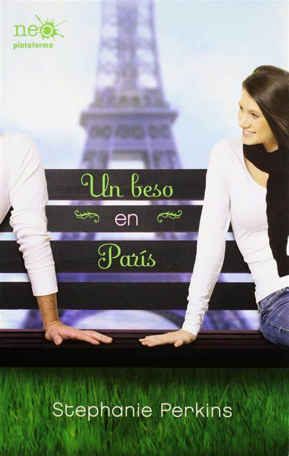
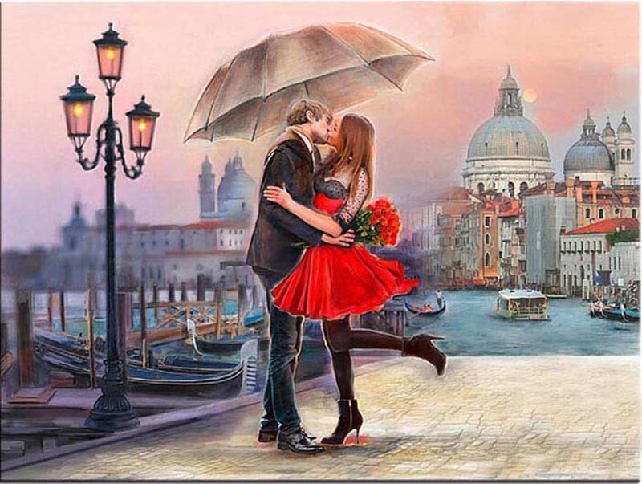
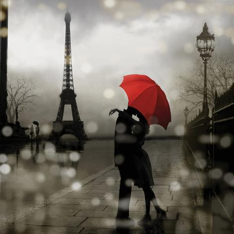
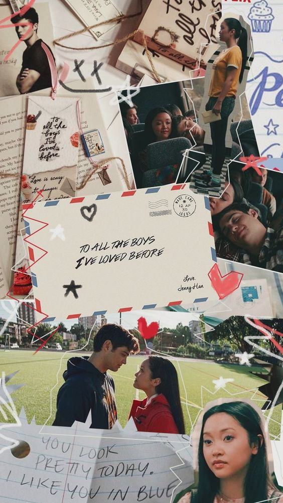

| INICIO | JUVENIL | ROMANTICO | ;GENERAL |
Un beso en París. Libro escrito por la escritora norteamericana Stephanie Perkins. Narra la historia de
dos personajes que tendrán el mismo conflicto, y que en cierta manera, tiene ciertas similitudes.
Datos de la autora
Stephanie Perkins nació en Carolina del Sur, creció en Arizona y fue a la Universidad de San Francisco y Atlanta.
Siempre ha trabajado con libros: primero como librera, después como bibliotecaria y ahora como escritora de literatura juvenil.
También siempre le gustó contar historias, pero, incluso después de hacer un curso de escritura creativa, pasaron años antes de que
se decidiera a hacerlo. En la actualidad vive en las montañas de Carolina del Norte con su esposo.
Divertida, dulce y sorprendente. Perkins nos seduce con una historia de amor que nos podría pasar mañana, acompañadas de un sinfin de sonrisas,
emociones y sorpresas.
|
La torre Eiffel, Amélie y un montón de reyes que se llaman Luis. esto es todo lo que Anna conoce de Francia. por eso, cuando sus padres
le anuncian que pasará un año en un internado en París, la idea no acaba de convencerla. Pero, en la Ciudad del Amor, conoce al chico ideal: Étinne St. Clair. Es listo, encantador, y muy guapo. El único problema es que también tiene novia. ¿Conseguirá Anna el ansiado beso de su Príncipe azul? |
 |
|
Anna llega a la School of America de París sin tener ni idea de francés y muy enfadada con su padre y su idea de una «buena experiencia de aprendizaje».
Parecera una locura enfadarte por ir a París, pero para Anna eso significaba sentirse sola y abrumada por vivir en una ciudad en la que no podia moverse
porque no conoce el idioma, sumandole que no conoce a nadie. Esto se empieza a solucionar cuando ella hace amigos, entre ellos, Étienne St. Clair,
ellos la ayudarán a perderle el miedo a París y al francés. St. Clair, aunque bajito, es guapo y destila carisma y una actitud muy bondadosa.
No es de extrañar que todas las chicas de la escuela tengan un crush por él y que los chicos lo respeten y tengan envidia. Es por ello que es Una lástima que tenga
novia. Aún así, entre Étienne y Anna surge una atracción casi inmediata y palpable, que intentan canalizar en una amistad que va creciendo poco a poco
hasta convertirse en algo más . Una serie de acontecimientos y malas decisiones nos mantendrán en duda hasta el final.
Un beso en París es una historia dulce y bonita, con cierto toque dramático como buena novela romántica que es. Es una historia de amor, pero también habla de la amistad y el crecimiento personal, de aprender a vivir. Aunque el ritmo de la historia puede hacerse algo lento al principio, enseguida los personajes, París y la narración en primera persona te hacen sumergirte en la lectura y no parar hasta llegar a los grandiosos capítulos finales. Los personajes son entrañables y les tomaras cariño rápidamente, si bien a veces desesperan al lector con sus malentendidos, señales inconclusas o palabras que no se atreven a decir. Pero no seria una historia de amor, si no tuviera todo un drama alrededor. ¿cierto? |
|  |
A Todos los Chicos de los que me Enamoré es una novela literaria homónima estadounidense romántica adolescente
de 2014 escrita por Jenny Han.
Jenny Han es la autora de la exitosa serie verano, que incluye: No hay verano sin ti, El
verano en el que me enamoré y siempre nos quedará el verano.
su trilogía A todos los chicos de los que me enamoré ha sido un éxito internacional, encubrado en la lista de
los libros más vendidos en The New York Times.
| Lara Jean guarda sus cartas de amor en una caja. No son cartas que le hayan enviado, las escribió ella, una por cada chico del que se ha enamorado. En ella se muestra tal como es, porque está segura de que nadie las leerá. Hasta que un día alguien las envía por equivocación y la vida amorosa de Lara Jean pasa de imaginaria a estar totalmente fuera de control |
|
Cuando Lara Jean quiere olvidarse de un chico, le escribe una carta de despedida y la guarda en una
sombrerera que heredó de su madre. El método le funciona y ella está tan contenta, hasta que un día Peter Kavinsky
aparece en su taquilla para pedirle explicaciones. Alguien ha enviado las cartas por error y Peter, como es lógico,
piensa que se la ha enviado ella y que la ha escrito hace poco.
Lara Jean cree estar viviendo una pesadilla. Lo peor no es Peter ya que aquello pasó hace años y lo que él pueda pensar no le preocupa, lo realmente es importante es Josh, el novio de su hermana mayor. Porque sí, también a él le escribió una carta, y ahora que Margot y él han roto, ese mensaje puede dar lugar a más de un malentendido. Porque Josh se está sintiendo olvidado y recibir la carta de Lara crea falsas ideas en él. Como era de esperar, Lara Jean se mete en un lío tras otro por culpa de estas cartas. La situación da mucho juego y el libro está lleno de escenas ingeniosas y divertidas. Lara tiene que lidiar con el hecho de llegar a un acuerdo con Peter para que este no arruine una historia que ella le invento a Josh para evadir el tema de las cartas. |
|  |
Sí, si es contigo es una novela epistolar que cuenta la apasionante historia de amor de dos youtubers.
Por medio de cartas, chats y entradas en su diario, las protagonistas narran detalles íntimos de su
inesperada relación, de su pasado, sus miedos, sus pasiones y la emocionante aventura que las lleva a
convertirse en celebridades de las redes sociales y alcanzar un éxito monumental.
Calle y Poché son la pareja de creadoras de contenido digital con el crecimiento más acelerado de
Latinoamérica en todas sus plataformas digitales. Compartir la misma visión las llevó a crear una propuesta de
contenido variado y de calidad que ha marcado la diferencia en el mundo digital.
| Daniela Calle y María José Garzón, más conocidas en el mundo digital como Calle y Poché, publican Sí, si es contigo para mostrarnos a D y M, dos adolescentes de clases sociales y realidades dispares que nos harán partícipes de la historia de un amor… ¿imposible? ¿posible? |
|
D es una chica de alta posición social, amante del cine de antaño y de las cosas vintage, y enredada en una relación algo compleja
con un tipo bastante desagradable llamado Samuel. M es una joven de clase media, quien trabaja en un café y es lectora voraz.
Por casualidad coincidirán y de ahí en adelante una fuerte amistad se forjará entre ambas.
D tiene una relación muy toxica con Samuel, a quien ella siempre le perdona todo y deja que él la trate como quiera sin protestar, pero esto cambia cuando comienza a pasar más tiempo con M, con ella se siente cómoda, comprendida y protegida, lo que le da la valentía para por fin soltar esa relación que tan mal le estaba haciendo. M por su parte es una chica muy reservada con su vida, pues aun no logra superar la muerte de su madre, este suceso la sometió en una fuerte depresión y aislamiento de todo. Poco a poco lo pudo ir superando sin embargo aún le cuesta abrirse ante el mundo, sintiendose frágil ante los demás, pero con D las cosas son mucho más fáciles. Sin darse cuenta ambas comienzan a sentir un cariño más allá del de una amistad, y aunque les da miedo descubrir esa parte de ellas, saben que no quieren alejarse porque lo que sienten es tan intenso que aun con miedo están dispuestas a luchar por ello y es así como comienzan una relación. Sin embargo cuando estaban listas para revelar su relación ante todos un suceso lo cambia todo. |